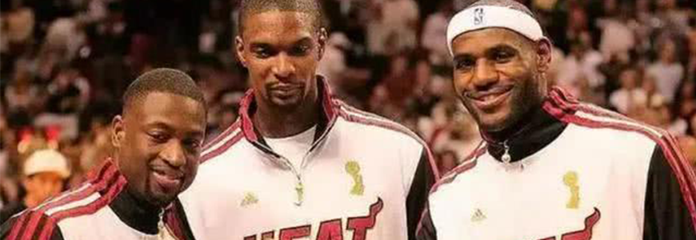

- 
<
>
- 1
- 2
- 3
- 4
- 5

1988年3月14日出生于美国俄亥俄州阿克伦，美国职业篮球运动员，司职控球后卫，现效力于NBA金州勇士队。 斯蒂芬·库里2009年通过选秀进入NBA后一直效力于勇士队，2014-15赛季当选常规赛MVP，入选最佳阵容第一阵容，并帮助勇士队获得NBA总冠军。斯蒂芬·库里2010年随美国队获土耳其世锦赛冠军，2014年随美国队获西班牙篮球世界杯冠军。2015年5月，斯蒂芬·库里当选NBA2014-2015赛季的常规赛MVP。7月，获最佳NBA运动员奖和最佳男运动员奖。2016年4月，斯蒂芬·库里入选全球100大最有影响力人物，成为唯一一位入选该名单的篮球运动员。5月11日，斯蒂芬·库里正式蝉联常规赛MVP，全票当选成历史第一人。2017年6月13日，库里随勇士队获得2016-17赛季NBA总冠军。2018年1月19日，入选洛杉矶全明星赛西部先发名单，并任西部队长。2018年6月9日（北京时间），金州勇士4:0战胜骑士队，获得2018NBA总决赛冠军。